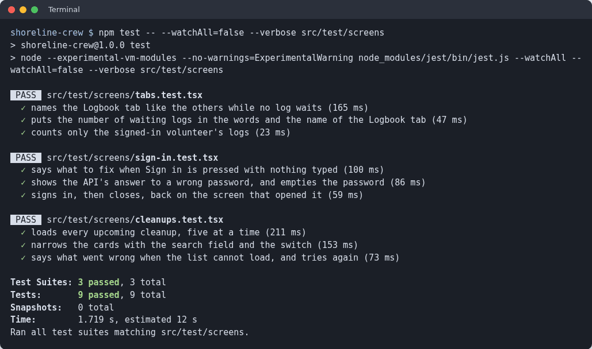

How to teach Session 21: Checkpoint 3 on Modules 7 and 8 so far (motion, gestures, accessibility and logic tests: an accessible row against handed-out tests, tests for a swipe rule, four written questions), then Lesson 8.3: component and screen tests with React Native Testing Library 14 and Expo Router's testing library that find controls by role and name like a screen reader, the lesson's own mistakes made and read from the printed tree, a lab where learners write the tests and prove them on planted bugs, and a Maestro flow read the way the lesson hedges it.
labs/module-21/l8_3-testing-screens-and-flows/starter) and then prove them on planted bugs (the debug_* files). The checkpoint's C1 tests are handed out; its C2 asks learners to write tests too (labs/module-21/checkpoint-3/starter).Jest transforms every file the first time it sees it: the kit measured about half a minute for the lab's router test in a fresh copy, and the lesson's screenshot caption warns that a first run takes seconds per file. Thirty learners doing that at 0:10 turns the checkpoint into a wait. Before: at the end of Session 20 (or by email), ask learners to run npm test once in labs/module-21/checkpoint-3/starter and labs/module-21/l8_3-testing-screens-and-flows/starter at home (the TODO failures are the expected result) so Jest's cache is warm. In the room: start the checkpoint clock when every npm test shows its five failures; a machine that cannot run Jest pairs with a neighbor for C1 and C2 (note it on the rubric) and answers W1 to W4 alone. After: nobody's checkpoint depends on the venue.
python3 labs/check_labs.py module-21 from this kit's folder (17 runs, about six minutes: the starters fail with their TODOs, the solutions pass their tests, type checks and lint, each planted bug makes the reference tests fail, and the wrong import gives TS1362). Nothing needs the API.lesson-30-end from the course downloads, npm install in shoreline-crew), with npm test -- --watchAll=false run once (45 passed: the transform cache is then warm for the demo). Keep lesson-30-start for the project start: it is the code learners start from.labs/module-21/checkpoint-3 WITHOUT solution/ on the shared drive or a USB stick; print the workbook's Checkpoint 3 page if learners write W1 to W4 on paper.SwitchRow.test.tsx, jest.setup.ts, package.json, src/test/render.tsx and src/test/screens/ open; two terminals in shoreline-crew (one for single runs, one for the watching npm test); lesson_30.html in a browser tab for the RNTL table and the Maestro table..maestro/sign-in.yaml once against Expo Go at home, so you can show the real thing at 2:25. Without one, the segment reads the flow; that is the lesson's own fallback.| Symptom | Cause | Fix |
|---|---|---|
render function has not been called | render(...) without await (RNTL 14 is async) | await every render, rerender, renderHook, fireEvent and act; the test is async |
Unable to find an element with text: … with the words in the printed tree | the words are aria-hidden (or behind a modal) | query by role and name; { includeHiddenElements: true } only to press hidden words |
TS1362: 'userEvent' cannot be used as a value | RNTL names imported from expo-router/testing-library | import them from @testing-library/react-native |
A screen test stuck on Loading … until it times out | renderRouter's fake clock froze nextTick and queueMicrotask | package.json jest fakeTimers.doNotFake (Step 1) |
TurboModuleRegistry … 'DevMenu' could not be found and deprecation warnings | FlashList left untransformed | add @shopify/flash-list to jest-expo's transformIgnorePatterns list (Step 1) |
useLargeText() true in a test at "normal" size | React Native's preset window has fontScale 2 | the setup's Dimensions.set() before every test (Step 1) |
findBy… fails after the app's retries | findBy counts fake time; its limit is 1 second | { timeout: 5000 } for the 1 + 2 second retries (Step 5) |
A test file in src/app/ shows up as a route | Expo Router treats every file there as a screen | screen tests live in src/test/screens/ |
| Clock | Minutes | Segment | What happens |
|---|---|---|---|
| 0:00 | 10 | Warm-up: Modules 7 and 8 retrieval | Four questions out loud: shared values, gesture offsets, Reduce Motion, live regions. |
| 0:10 | 30 | Checkpoint 3 (Modules 7 and 8 so far) | labs/module-21/checkpoint-3/starter: C1 an accessible cleanup row against handed-out tests, C2 the tests for a swipe rule, then W1 to W4 in the workbook. Alone, notes allowed. |
| 0:40 | 10 | 8.3 Frame and mental model | The radio call, heard by the test; RNTL 14 against the web's Testing Library; a rehearsal stage with real props. |
| 0:50 | 20 | 8.3 Live demo, part 1: components | SwitchRow's three tests, the missing await, the hidden words, the pretend phone's window and platform. |
| 1:10 | 10 | Break | Leave the RNTL-versus-web table and "suspect the clock, not the API" on the board. |
| 1:20 | 20 | 8.3 Live demo, part 2: screens | Step 1's two settings, the render helper, sign-in and Cleanups under renderRouter, TS1362, the frozen fetch, coverage per file. |
| 1:40 | 25 | 8.3 Guided lab | labs/module-21/l8_3-testing-screens-and-flows/starter: learners WRITE the tests: a counter by role and name (Task 1), a list's three faces with MSW (Task 2). |
| 2:05 | 20 | 8.3 Start the lesson project | Steps 1 and 2: the two Jest settings, the setup file, the SwitchRow test green (and broken on purpose once). |
| 2:25 | 10 | 8.3 End to end with Maestro | The flow read step by step, where it can run, what it needs; nothing run without a device. |
| 2:35 | 15 | Checkpoint 3 debrief | The tests' verdicts, the planted changes C2's tests must catch, W1 to W4 aloud. |
| 2:50 | 10 | Wrap-up | Exit ticket (3 questions), homework, bring list for Session 22. |
| Total | 180 | Ends at 3:00. |
In the room. Lesson 8.3 estimates 155 minutes for a learner working alone; after the warm-up, the checkpoint and its debrief, the break and the wrap-up, the room has 105 minutes for it. It keeps its full shape: model, two demo blocks, a lab, the project start, and the end-to-end segment. The checkpoint is 30 minutes of the agenda plus a 15-minute debrief.
Goes home (about 2 to 3 hours). The lesson project from Step 3 (AppText and useLargeText) through Step 7 (render helper, sign-in, Cleanups, the tab bar, the Maestro flow written, coverage, 45 green, tsc and lint clean, the commit); the lesson's Exercises 1 and 2 (Exercise 3 is a stretch); the Quick Quiz; the journal; Lab 8.3's Task 3 (two screens under the router) and the planted-bug check; anyone who did not finish Checkpoint 3's code finishes it at home for feedback only (the rubric scores what was handed in at 0:40). With a device: run the Maestro flow.
Protect, in this order: the checkpoint's 30 minutes; the two demo mistakes that read the printed tree (missing await, hidden words); the guided lab (writing tests is the skill); the frozen-fetch step. Cut first: the coverage step (it is Step 7, at home), then the warm-up (start the checkpoint at 0:00 and use the 10 minutes in the debrief), then the project start (learners do Steps 1 and 2 at home: two settings and one test file).
| 2m | Welcome back; what today holds: Checkpoint 3, then tests that tap |
| 8m | Four questions out loud, no notes: a minute to think, one answer each, the board records the mechanism |
Do not teach here: if two questions get blank looks, say "good, that is what the checkpoint is for" and note which ones for the debrief.
| 3m | Brief: the folder, the two tasks, C1's tests are the specification, notes and lesson pages allowed, no neighbors |
| 10m | C1: make src/CleanupRow.tsx pass src/c1.test.tsx (Lesson 8.1) |
| 12m | C2: write the tests for swipeOutcome() in src/c2.test.ts (Lessons 7.2 and 8.2) |
| 5m | W1 to W4 in the workbook (written; nothing checks them automatically) |
In labs/module-21/checkpoint-3/starter: npm test (five tests, all failing as shipped) and npm run typecheck. C1: a cleanup row that looks right and that a screen reader cannot use: the title must be a heading, Join a button whose name starts with its visible word (Join Tide Pool Morning Cleanup), the wave decoration, a full cleanup Full with its button switched off. C2: src/swipe.ts works (remove after a slow swipe of at least 40 % of the row to the left, or a fling left at 800 points per second or more); learners write its tests, named as sentences, that would fail if anyone changed the rule. Modules 7's motion is assessed in W1 to W4: it needs a phone to watch, not a test.
As shipped, the first failures read:
● C2: (your first test, as a sentence) TODO C2: write the tests for swipeOutcome ● C1: the title is a heading Unable to find an element with role: header, name: Tide Pool Morning Cleanup ● C1: Join is a button whose name starts with its words, and one press joins once Unable to find an element with role: button, name: Join Tide Pool Morning Cleanup
The model solution's run (C1's four tests and the model C2 tests):
PASS src/c2.test.ts ✓ C2: a slow swipe 40 % of the way, exactly: -140 ✓ C2: a slow swipe that is not far enough: -139 ✓ C2: a short swipe flung to the left fast: -30 ✓ C2: a short swipe that slows down: -30 ✓ C2: a long swipe to the right: 300 ✓ C2: a fling to the right: 30 ✓ C2: measures the 40 % against the row it is given PASS src/c1.test.tsx ✓ C1: the title is a heading ✓ C1: Join is a button whose name starts with its words, and one press joins once ✓ C1: the wave is decoration ✓ C1: a full cleanup says so, and its Join button is switched off Tests: 11 passed, 11 total
| Criterion | 2 · met | 1 · partly | 0 · not yet |
|---|---|---|---|
| C1 roles and names | Heading role on the title; Join is a button named Join <title> (starts with its visible word) | One of the two right, or a name that does not start with Join | Neither |
| C1 hidden and disabled | The wave is aria-hidden; a full cleanup says Full and its button is disabled | One of the two | Neither |
| C2 tests that catch changes | Pass on the working rule and fail on both planted changes (the 40 % edge, the fling's direction) | Pass, and catch one of the two | Missing, failing, or catch neither |
| C2 test quality | Named as sentences; it.each or one case per test; both directions and the speed limit covered | Some sentences or cases missing | One vague test |
| W1 to W4 | All four correct in their own words, naming the mechanism | Two or three correct | One or none |
Score what was handed in at 0:40 (a screenshot of npm test and the two files, or a look over the shoulder during the debrief). C1 is scored by its tests and a look at the names. For C2's first row, run the learner's tests against the two planted changes the kit checks (the 40 % edge <= made <, and a fling to the RIGHT that removes): the model answer fails once on each (Answer Key). A learner below 7 redoes the missed rows at home and shows them at the start of Session 22.
accessibilityLabel="Join" passes no test (the name must say which cleanup) and accessibilityLabel={title} fails Label in Name: score the names row 1 and ask "what would voice control say?"{full ? null : <Pressable…>}): the test cannot find the button at all. A switched-off control stays on the screen and says so (disabled).swipe.ts or c1.test.tsx: both are off limits; the tests are the specification.The workbook's second self-check reviews what the checkpoint assesses; learners do it at home before or after Session 21.
Answers: Q7 D) Shared values change on the UI thread every frame without re-rendering React; state would re-render on the JavaScript thread; Q8 A) activeOffsetX (start only after a clear sideways move) and failOffsetY (give up on a vertical one); Q9 C) A CSS-style transition or keyframes animation in a style; Q10 B) Join Tide Pool Morning Cleanup; Q11 A) Nothing: every function exists and returns undefined, and remembers its calls; Q12 A slow swipe of exactly 40 % of the width (for example -140 on a 350-point row) expects remove. Full set with explanations in the Answer Key.
| 10m | Frame: the radio call, heard by the test; RNTL 14 against the web's Testing Library; the rehearsal stage |
| 20m | Live demo, part 1: SwitchRow's tests, the missing await, the hidden words, the pretend phone |
| 20m | Live demo, part 2: Step 1's settings, renderRouter and the sign-in test, TS1362, the frozen fetch, coverage |
| 25m | Guided lab: l8_3-testing-screens-and-flows/starter, Tasks 1 and 2 |
| 20m | Start the lesson project: Steps 1 and 2 |
| 10m | End to end with Maestro: the flow, read |
From the lesson: "Lesson 8.1 described what a screen reader says as a radio call: label, role, state ('Group by date, switch, off'). An RNTL query is a crew member listening to that radio. getByRole('switch', { name: 'Group by date' }) means 'I heard a switch called Group by date', and toBeChecked() means 'and it said on'. If the call is garbled (no role, no name, the words twice), the test cannot find the control either. Write tests that listen to the radio, not tests that peek at the wiring."
Then the table that saves the most time, from the lesson: await render(...) (render, rerender, renderHook, fireEvent and act return Promises in RNTL 14); userEvent from RNTL itself with press, type, clear (no mouse, no Tab key: a phone has fingers); built-in matchers (toBeOnTheScreen, toBeChecked, toHaveTextContent, toHaveDisplayValue, toBeDisabled); hidden elements skipped by default; no DOM: screen.debug() prints View, Text, TextInput, RCTSwitch.
For the second half, the rehearsal stage: "A theater rehearses on a bare stage: tape on the floor where the walls will be, a chair standing in for the throne. But the actor's script and the props in their hands are the real ones." The route list is the tape; the screen, its form, its cache and the API's rulebook are real. The full dress rehearsal on the real stage is the end-to-end flow.
In your copy of the finished project, from shoreline-crew. Every output below is the kit's real run in a copy of the stage after Lesson 8.3; learners see the same lines with their own times.
it('flips exactly once for a tap on the switch or on the words', async () => { const onChange = jest.fn(); const user = userEvent.setup(); await render(<GroupByDate onChange={onChange} />); const toggle = screen.getByRole('switch', { name: 'Group by date' }); await user.press(toggle); // a finger on the switch itself expect(onChange.mock.calls).toEqual([[true]]); expect(toggle).toBeChecked(); await user.press(screen.getByText('Group by date', { includeHiddenElements: true })); expect(onChange.mock.calls).toEqual([[true], [false]]); expect(toggle).not.toBeChecked();
npm test -- --watchAll=false src/components/SwitchRow.test.tsx
> shoreline-crew@1.0.0 test > node --experimental-vm-modules --no-warnings=ExperimentalWarning node_modules/jest/bin/jest.js --watchAll --watchAll=false src/components/SwitchRow.test.tsx PASS src/components/SwitchRow.test.tsx ✓ is one switch, named by its words, as a screen reader meets it ✓ flips exactly once for a tap on the switch or on the words ✓ flips once when a screen reader turns the switch itself Test Suites: 1 passed, 1 total Tests: 3 passed, 3 total Snapshots: 0 total Ran all test suites matching src/components/SwitchRow.test.tsx.The kit's run is the lesson's card, line for line (without the times). Point at three habits: every
render and user.* call awaited; the test finds the switch by role and name; mock.calls equal to [[true], [false]] says exactly two changes.await in front of the first test's render (the web habit). Ask: "what will it say?" Run the same file:
npm test -- --watchAll=false src/components/SwitchRow.test.tsx
● is one switch, named by its words, as a screen reader meets it
`render` function has not been called
22 | it('is one switch, named by its words, as a screen reader meets it', async () => {
23 | render(<GroupByDate onChange={jest.fn()} />);
> 24 | expect(screen.getByRole('switch', { name: 'Group by date' })).not.toBeChecked();
| ^
The arrow points at screen, the cause is the line above it: the render started, and the test did not wait. Put the await back.screen.getByText('Group by date', { includeHiddenElements: true }) with a plain screen.getByText('Group by date'):
npm test -- --watchAll=false src/components/SwitchRow.test.tsx
● flips exactly once for a tap on the switch or on the words
Unable to find an element with text: Group by date
<View
accessible={false}
>
<Text
aria-hidden={true}
>
Group by date
</Text>
<RCTSwitch
accessibilityLabel="Group by date"
accessibilityRole="switch"
value={true}
/>
</View>
37 | expect(toggle).toBeChecked();
38 |
> 39 | await user.press(screen.getByText('Group by date'));
| ^
Read the printed tree with the room: the words are there, with aria-hidden={true}. That attribute is the clue: RNTL skips what screen readers skip. The test listens to the radio, not the wiring. Undo.npm test -- --watchAll=false --verbose src/components/AppText.test.tsx src/hooks/useLargeText.test.ts # without the beforeEach in jest.setup.ts: npm test -- --watchAll=false src/hooks/useLargeText.test.ts
PASS src/hooks/useLargeText.test.ts
✓ is false at the normal text size
✓ follows the text size while the app is open, from one and a half times
PASS src/components/AppText.test.tsx
✓ asks VoiceOver to say a live text when it appears and when its words change
✓ keeps quiet about text that is not live
✓ leaves it to the live region on Android
Tests: 5 passed, 5 total
● is false at the normal text size
expect(received).toBe(expected) // Object.is equality
Expected: false
Received: true
12 | it('is false at the normal text size', async () => {
13 | const { result } = await renderHook(() => useLargeText());
> 14 | expect(result.current).toBe(false);
| ^
React Native's Jest preset pretends a 750 by 1334 window with text at twice its size: a tablet with large text, so useLargeText() is true at "normal". The setup's Dimensions.set() makes it a phone. Then name the other two pretend parts: Platform.OS is 'ios' (jest.replaceProperty plays Android for one test), and AccessibilityInfo is already a recording stand-in (jest.mocked(...) reads what the app asked VoiceOver to say). Put the line back. Hedge as the lesson does: a test at fontScale 2 proves the app switches at 2, not what a phone reports.Same copy. These are the lesson's Steps 1, 4, 5 and 7 and two of its Common Mistakes; learners do Steps 1 and 2 in the room and the rest at home.
"transformIgnorePatterns": [
"/node_modules/(?!(.pnpm|react-native|@react-native|@react-native-community|expo|@expo|@expo-google-fonts|react-navigation|@react-navigation|@sentry/react-native|native-base|standard-navigation|@shopify/flash-list))",
"/node_modules/react-native-reanimated/plugin/",
"/node_modules/@react-native/babel-preset/"
],
"fakeTimers": {
"doNotFake": [
"nextTick",
"queueMicrotask"
]
}
transformIgnorePatterns is jest-expo's own list with @shopify/flash-list added (setting the key replaces the preset's list, so the whole list is there); doNotFake keeps nextTick and queueMicrotask real whenever a fake clock is on./, the real sign-in screen. Run the three screen files:
export function renderScreens(routes: MockContextConfig, initialUrl = '/') { return renderRouter(routes, { initialUrl, wrapper: Providers });
npm test -- --watchAll=false src/test/screens
> shoreline-crew@1.0.0 test > node --experimental-vm-modules --no-warnings=ExperimentalWarning node_modules/jest/bin/jest.js --watchAll --watchAll=false src/test/screens PASS src/test/screens/tabs.test.tsx PASS src/test/screens/sign-in.test.tsx PASS src/test/screens/cleanups.test.tsx Test Suites: 3 passed, 3 total Tests: 9 passed, 9 total Snapshots: 0 total Ran all test suites matching src/test/screens.The kit's run is the lesson's card. Mental model: a rehearsal stage with real props (the route list is tape on the floor; the screen, its form, its cache and the API's rules are real). In the third sign-in test, "Profile" is on the screen all along, hidden behind the modal: findByText waits until the modal has closed.
screen and userEvent from expo-router/testing-library in sign-in.test.tsx. Jest still passes (the module passes RNTL's exports through). Then:
npx tsc --noEmit
src/test/screens/sign-in.test.tsx:21:10 - error TS1362: 'userEvent' cannot be used as a value because it was exported using 'export type'.
21 return userEvent.setup();
~~~~~~~~~
node_modules/expo-router/build/testing-library/index.d.ts:10:1
10 export type * from '@testing-library/react-native';
~~~~~~~~~~~~~~~~~~~~~~~~~~~~~~~~~~~~~~~~~~~~~~~~~~~
'userEvent' was exported here.
Found 1 error in src/test/screens/sign-in.test.tsx:21
Word for word the lesson's card. The type file re-exports RNTL's types only. RNTL's names from RNTL; only renderRouter, testRouter and the matchers from Expo Router. Undo.fakeTimers key from package.json and run only the first Cleanups test:
npm test -- --watchAll=false src/test/screens/cleanups.test.tsx -t 'five at a time'
FAIL src/test/screens/cleanups.test.tsx ✕ loads every upcoming cleanup, five at a time Tests: 1 failed, 2 skipped, 3 total ● loads every upcoming cleanup, five at a time Unable to find an element with text: 8 cleanupsThe tree (cut here) ends on
Loading cleanups…: the mock API never got to answer. Ask the Predict P2 question now: do the sender's tests still pass? (Yes: no fake clock there.) Put the key back.npm test -- --watchAll=false --coverage npx tsc --noEmit npx expo lint
File | % Stmts | % Branch | % Funcs | % Lines | Uncovered Line #s All files | 60 | 49.95 | 61.64 | 63.03 | sign-in.tsx | 85.71 | 81.81 | 60 | 85.71 | 71-81 index.tsx | 85.18 | 69.86 | 81.81 | 84 | 67-68,77-85,156,165 AppText.tsx | 91.66 | 76.47 | 100 | 90.9 | 19 SwitchRow.tsx | 100 | 100 | 100 | 100 | useLargeText.ts | 100 | 100 | 100 | 100 | ... Test Suites: 14 passed, 14 total Tests: 45 passed, 45 totalRead the rows, not All files: SwitchRow and useLargeText fully covered, AppText all but line 19, the Cleanups screen 84 % of its lines. A screen no test imports (the Logbook) is not in the table at all. tsc prints nothing; expo lint prints only Expo's two
env: lines.testID='join'." Coach: "What would VoiceOver call it? Give it that name and the test finds it too." (The lesson's FAQ: testID is a fallback.)Unable to find an element with text and the learner retypes the words. Coach: "Scroll down: the tree is the test's eyes. Is the text there? With which attributes?" (Self-check Q2.)toBeOnTheScreen() on a heading that is always there. Coach: "Break the code on purpose: does your test notice?" (the lab's planted bugs; Lesson 8.2's habit).Folder: labs/module-21/l8_3-testing-screens-and-flows/starter/ (task sheet labs/module-21/l8_3-testing-screens-and-flows/TASKS.md); your reference is labs/module-21/l8_3-testing-screens-and-flows/solution/. New practice, not the lesson's project: the code in src/ works (a bag counter, a beach list that loads GET /api/sites with the course API's real answer in fixtures/sites.json, two screens under the router), and learners write its tests. Uses the shared lab install; nothing else.
npm test: seven tests fail, each with a TODO saying what to write. The first ones read:● starts at no bags, with the minus button switched off TODO 1a: write this test ● counts one bag per press, as a finger would TODO 1b: write this test
getByText('+') (it works, but which button is that for a screen reader?) and for a missing await on user.press. Ask early: "how do you find the ♻ if a screen reader cannot?"server.use(...) with { once: true } for the 503. The mock answer waits 50 ms ("one bar of signal") so the loading face is there to see.--verbose):PASS src/BeachList.test.tsx ✓ says it is loading, then lists every beach ✓ says what went wrong as an alert, and tries again PASS src/BagCounter.test.tsx ✓ starts at no bags, with the minus button switched off ✓ counts one bag per press, as a finger would ✓ keeps the decoration away from screen readers PASS src/screens.test.tsx ✓ opens the next cleanup's own screen from its link ✓ says so for a cleanup that does not exist Tests: 7 passed, 7 total
debug_BagCounter.tsx over the BagCounter on the projector and run the reference tests: two of three fail. "Which promise broke?" (the minus button is never switched off; the icon is read out). The kit's run: Tests: 2 failed, 1 passed, 3 total.toHavePathname, an unknown id) and the other two planted bugs; then the lesson's Exercise 1 (ErrorView).The lesson project is Tests a Volunteer Would Recognize, seven steps. In the room, do Steps 1 and 2 (20 minutes) from lesson-30-start (the code after Lesson 8.2: 28 tests).
"jest" section (the whole transformIgnorePatterns list, fakeTimers.doNotFake) and the two additions to jest.setup.ts. Done when the 28 tests from Lesson 8.2 still pass in the watching terminal.src/components/SwitchRow.test.tsx, typed, then npm test -- --watchAll=false src/components/SwitchRow.test.tsx: three tests by name. Then break the design once (Predict P1: delete style={styles.switch}) and put it back.lesson-30-end.
.maestro/sign-in.yaml (the stage's file, below) next to the lesson's Playwright-versus-Maestro table. Read it as a tester would: open the project's address in Expo Go (openLink, not launchApp, as Maestro's React Native page says for Expo Go), wait up to 60 s for "Upcoming cleanups", tap Profile.* (on an iPhone the tab's name is "Profile, tab, 4 of 4": tapOn is a regular expression), sign in, see Theo's name, sign out.- openLink: ${APP_URL}
- extendedWaitUntil:
visible: Upcoming cleanups
timeout: 60000 # the first time, the phone downloads the whole app from Metro
- tapOn: Profile.* # the tab: on an iPhone its name is "Profile, tab, 4 of 4"
- tapOn: Sign in
- tapOn: Email
- inputText: theo.nakamura@example.com
- tapOn: Password
- inputText: shoreline-demo
- pressKey: Enter # the password's return key signs in (Lesson 5.4)
- assertVisible: Theo Nakamura
- takeScreenshot: signed-in
- tapOn: Sign out
- assertVisible: Sign inAsk these out loud during the demo and the lab:
getByText('Group by date') fail on a switch row? Answer: the words are hidden from screen readers (aria-hidden), and RNTL's queries skip hidden elements.user.press() do on a switch with pointerEvents: 'none'? Answer: the touch goes to the row's Pressable, which flips the value once.fakeTimers.doNotFake for nextTick and queueMicrotask.Workbook self-check, items Q1 to Q6 (learners do them at the end of the block or at home).
Answers: Q1 B) await render(<SwitchRow ... />); inside an async test; Q2 C) Find the switch by role and name, or add { includeHiddenElements: true } to press the words as a finger can; Q3 D) npx tsc --noEmit reports TS1362: userEvent was exported using export type; Q4 A) Only renderRouter switches on Jest's fake clock, and that clock froze the steps Node's fetch uses to finish; Q5 The second test fails: onChange.mock.calls is [] (Received: Array []), because the press now stops at the switch, and in Jest there is no native switch to flip itself; Q6 C) Can a volunteer sign in with the release build on a real Android phone?. Full set with explanations in the Answer Key.
Support: learners new to Testing Library start the lab from the reference's first test (shown on the projector) and change one thing at a time; pair them so one reads the printed tree aloud while the other types. One card: "await every render · find by role and name · press with userEvent · wait with findBy".
Stretch: Lab 8.3 Task 3 and all three planted bugs; the lesson's Exercise 3 (useSendWaitingLogs with renderHook and onlineManager) and the Bonus Challenge (a second Maestro flow, and which of the two checks to run on every commit).
Put the three questions on the slide; learners answer in the workbook's Exit Ticket box or on a sticky note.
await before render (and rerender, renderHook, fireEvent, act), in an async test.coverage/ in .gitignore, the Maestro flow written, committed.debug_* must make one of your tests fail)..maestro/sign-in.yaml with your own exp:// address and keep signed-in.png.lesson-31-start is the same code).npx expo install, npm uninstall).lesson-30-start; the demo already showed both.toHavePathname; then its planted bug.